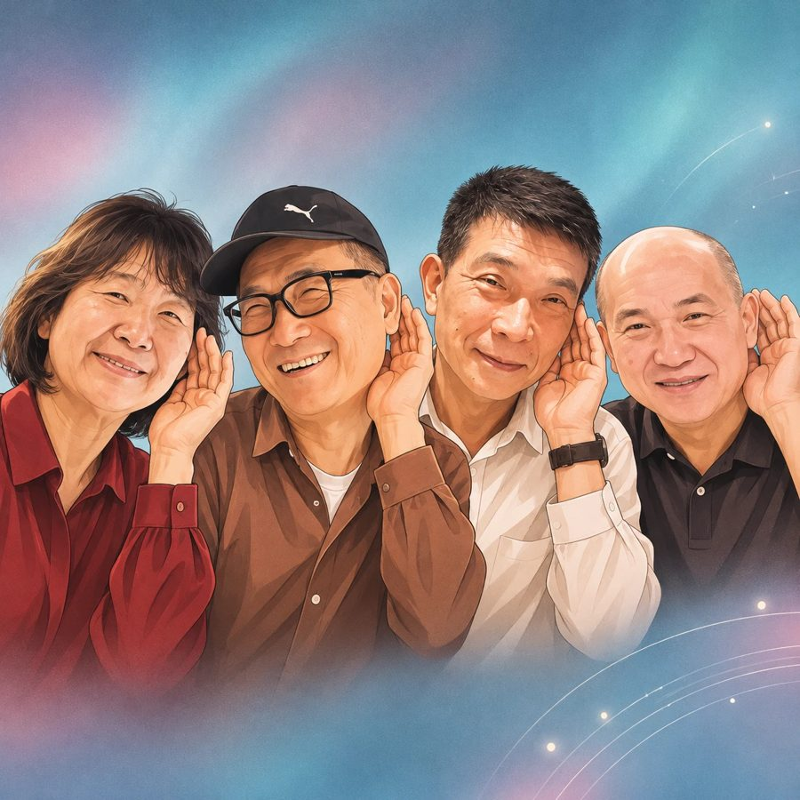

示意畫面｜點下面的按鈕看看，還不會真的送出
‹INLOOK暖暖包官方帳號
今天
二哥
INLOOK暖暖包
歡迎加入 INLOOK暖暖包。
在這裡可以跟二哥說話、謝謝同事、一起參加活動。點下面的按鈕看看。
在這裡可以跟二哥說話、謝謝同事、一起參加活動。點下面的按鈕看看。

二哥的三個承諾
匿名不過問
每則親自看
定期跟大家說
每則親自看
定期跟大家說
想具名或匿名，你自己選。
下午 2:00

老闆，你給我聽好了INLOOK暖暖包一起順起來
老闆，你給我聽好了網址待定
INLOOK 內部專用
老闆，
你給我聽好了
二哥
工作上哪裡卡卡的、有什麼點子、或只是想講講心裡話，都可以寫在這裡。每一則我都會親自看。
不過問匿名的意見，不會去問是誰說的
親自看每一則，二哥自己讀、自己回
會交代定期說做了什麼，沒做到也說原因
二哥
收到了，謝謝你願意說。我會親自看，回覆好了會放在這裡。
你的回覆碼
K7M-492
請截圖或抄下來。
這組碼只有你知道，我們也查不到是誰。
這組碼只有你知道，我們也查不到是誰。
看二哥的回覆
週年慶期間補貨常常晚到，客人來了沒尺寸，只能請她改天再來。可以讓門市自己看到倉庫還有幾件嗎？
謝謝你講出來，這個真的很重要。我已經找物流和資訊一起看，先試著讓門市在樓冠姐 APP 裡看得到倉庫庫存。12 月底前會跟大家說進度，做不到也會說為什麼。
↑ 這是範例內容
你說了，
我們做到了
12 月公司民意
38則發言
38則已回覆
5件在處理
這個月大家最常提的：補貨速度、排班、週年慶太累。
做到了
週年慶期間每間櫃多一份點心補給
台中一位同仁提的點子，她同意我們寫出來：謝謝 小雯
處理中
門市可以自己查倉庫庫存
預計 12 月底先在 3 個櫃試
還沒辦法
週六全部提早一小時打烊
百貨公司規定營業時間，我們改不了。會先跟百貨談延後到班。
↑ 這一頁全是範例內容，數字和人名都是假的